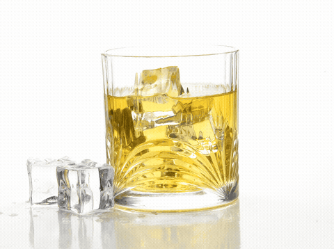
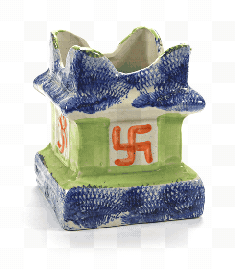
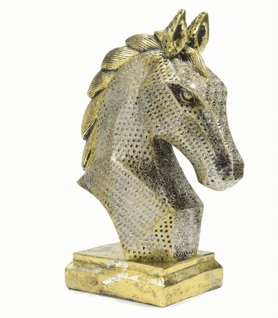
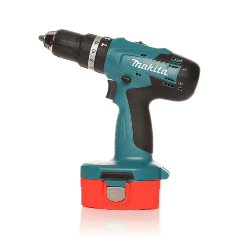
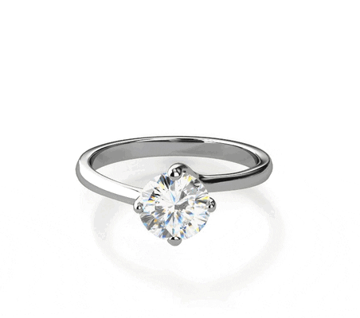

用手指或鼠标拖动即可旋转观看（下方为自动旋转的 GIF 演示）。实际交付为可拖拽交互的展示文件，存进每个商品（SKU）的档案，销售带 iPad 上门时客户自己转动观看。
制作方式：商品放上电动转盘，手机环绕拍摄 24–36 帧，系统自动合成——零 AI 生成、无失真，特别适合玻璃器皿。以下为公开示例产品的演示效果。

38 帧连拍合成。玻璃与透明材质的质感完全保留——这正是实拍方案优于 AI 生成的地方。
与贵司品类最贴近
69 帧连拍合成。对应 Garden 园艺品类的展示效果。

71 帧连拍合成。对应 Home Deco / Giftware 品类。

行业通用示例，展示不同品类同样适用。

小件商品示例——帧数越多转动越顺滑。